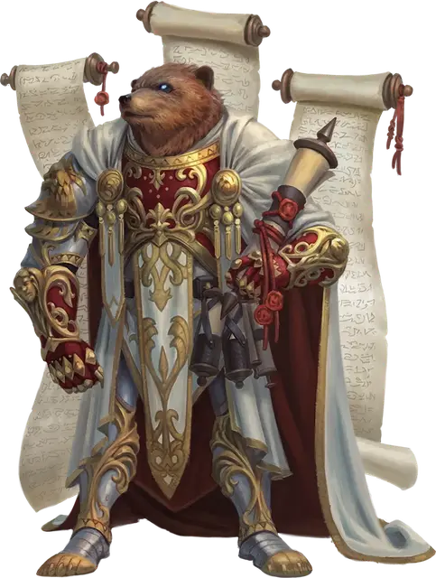

Архонт-страж
Warden Archon
Большой Небожитель, законно-добрый

Класс Доспеха 18 (латный доспех)
Хиты 136 (16к10 + 48)
Скорость 30 футов, лазая 30 футов
| мод | спас | ||
|---|---|---|---|
| СИЛ | 20 | +5 | +5 |
| ЛОВ | 10 | +0 | +0 |
| ТЕЛ | 17 | +3 | +6 |
| мод | спас | ||
|---|---|---|---|
| ИНТ | 15 | +2 | +2 |
| МДР | 18 | +4 | +7 |
| ХАР | 18 | +4 | +4 |
Навыки Атлетика +8, Восприятие +10, Магия +5
Иммунитет к урону электричество
Иммунитет к состояниям испуг, истощение, очарование, паралич
Чувства истинное зрение 30 футов, тёмное зрение 120 футов, пассивное Восприятие 20
Языки Все
Опасность 8 (3900 опыта)
Бонус мастерства +3
Особенности
Аура угрозы. Пока архонт дееспособен, каждое существо по выбору архонта, начинающее свой ход в пределах 20 футов от него, должно совершить спасбросок Мудрости Сл 15. В случае провала существо становится испуганным до начала своего следующего хода. При успешном спасброске существо становится невосприимчивым к Ауре угрозы всех архонтов на 24 часа.
Вечное бдение. Архонта невозможно застать врасплох. Более того, он знает, когда какое-либо существо использует портал, который ему поручено охранять.
Действия
Мультиатака. Архонт совершает две атаки Когтями и одну атаку Укусом ищейки.
Коготь. Рукопашная атака оружием: +8 к попаданию, досягаемость 10 футов, одна цель. Попадание: 12 (2к6 + 5) рубящего урона. Если цель — существо Среднего размера или меньшего размера, она становится схваченной (Сл высвобождения 18). Одновременно архонт может схватить только одно существо.
Укус ищейки. Рукопашная атака оружием: +8 к попаданию, досягаемость 5 футов, одна цель. Попадание: 15 (3к6 + 5) колющего урона. Если целью является существо, в течение следующих 24 часов архонт знает расстояние и направление до цели, пока они оба находятся на одном плане существования.
Использование заклинаний. Архонт накладывает одно из следующих заклинаний, не нуждаясь в материальных компонентах, используя Харизму в качестве базовой характеристики (Сл спасброска заклинания 15):
• Неограниченно: обнаружение зла и добра [detect evil and good]
• 1/день каждое: подмога [aid], вечный огонь [continual flame], защита от зла и добра [protection from evil and good], наблюдение [scrying] (действием)
Телепорт. Архонт телепортируется вместе со всем снаряжением, которое он носит или несёт, в незанятое пространство, которое он видит в пределах 120 футов от себя.
Описание
«Что касается бессмертных стражей, эти ребята любят превращать проблемы реальности в свои проблемы. Не обращайте на них внимания, когда они снова начнут своё: «Только вы можете предотвратить вневременные моральные парадоксы»
— Морте
Архонты — обитатели Семи Небес горы Селестии. Созданные силами порядка и доброжелательности, архонты защищают свой дом от вторжений Исчадий и защищают тех, кому угрожают злые силы. Архонты — опытные коммуникаторы, способные говорить на всех языках мультивселенной. Вступая в бой, они предпочитают подчинять врагов. Однако в борьбе против Исчадий архонты являются яростными бойцами, проявляющими праведную месть Горы Селестии, поражающей нечестивцев.
Форма каждого архонта соответствует его месту в Небесной иерархии. В бою архонты излучают ярость Верхних планов, поддерживая своих союзников и запугивая врагов.
Архонт-страж
Архонты-стражи — бдительные медвежьи стражи порталов и путей, ведущих в добрые миры. У них мощное телосложение, двуногие тела, головы огромных медведей и глаза, похожие на лужи серебристого света. Когда архонты-стражи говорят, мерцающее сияние исходит из их рта, подчеркивая их глубокие, звучные голоса.
Архонт-страж знает, когда существо использует портал, который архонту поручено охранять, и быстро перемещается, чтобы допросить любого, кто пересекает эту планарную границу. Если захватчик входит в план архонта, страж наносит удар когтями и зубами, используя свой мощный укус, чтобы магически отметить нарушителя, которого архонт неустанно преследует.